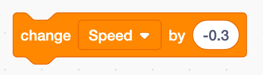
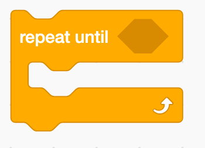

In this codelab, you'll make a game where the player guides a fish to swim between pairs of pipes.
What you'll learn
- Use the space bar to help the fish "jump".
- Use variables to track the fish's score.
- Use loops to move the pipes across the screen until the game ends.
Open the starter project and click Remix.
First, we are going to set the fish's starting conditions. We will be using two variables: Score and Speed.
Steps
- Create new Score and Speed variables.
- Set the speed at the beginning of the game to 0.
- Set the score at the beginning of the game (What should the score at the beggining of the game be set to?).
- Start the fish at the center of the stage.
The fish will naturally fall towards the bottom of the screen (due to gravity!) The fish will fall until he reaches the floor.

Steps
- First, have the fish move down the screen by the amount stored in Speed .
- Change Speed so that the fish falls faster and faster as he continues to fall.

- The above two actions should happen until the fish touches either a pipe or the floor. Hint: What color are both the pipe and the floor?

- When the fish hits a pipe or the floor, play a sound to show that the game has ended. You can choose which sound to play!

Now, we'll move on to the pipes. Even though it seems like the fish is moving to the right, the pipes will actually start on the right of the screen, then move to the left of the screen.
Steps
- Make the pipes start in a random place towards the right of the screen.
- Make the fish's speed go up by 6.
Now, we will program the fish to jump whenever the player presses the space bar.
Steps
- The sprite should only jump when the space bar is pressed. Hint: Which Event block should we use?
- Make the fish's speed go up by 6.
- Draw your own maze background! You can do this by changing the backdrop. If you want to make the superhero smaller, you can do that with a block in the Looks category
- Change the sprites for the player, home and goal of the maze
- Make something exciting happen when the game is lost or won
- Look at other scratch users' mazes here for more inspiration, or think of your own additons!